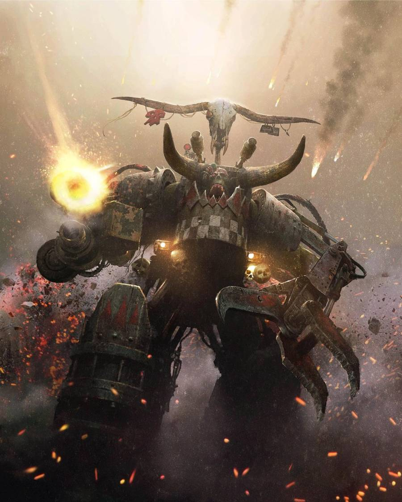

Ghazghkull Thraka
| Ghazghkull Mag Uruk Thraka | |
|---|---|
| Prophet of Gork and Mork | |
 Ghazghkull in his rebuilt mega armour after Krongar, pict-capture from the Imperium Sanctus | |
| Warlord of WAAAGH! Ghazghkull | |
| Tenure | c. 932.M41 – present |
| Predecessor | None; united the klans of Urk |
| Overlord of Octarius (by submission) | |
| Tenure | 999.M41 – present |
| Vassal | Zog Steeltoof, Overfiend of Octarius |
| Spawned | M41, Urk (formerly Urokleas), Zornian System |
| Died | Beheaded at Krongar by Ragnar Blackmane (M42) |
| Revived | Ten days later, by Mad Dok Grotsnik |
| Status | Active; leading the Great WAAAGH! against the Imperium |
| Klan | Goffs |
| Companions | Makari (banner-bearer); Mad Dok Grotsnik; Big Mek Orkimedes |
| Nemesis | Commissar Sebastian Yarrick |
| Wargear | Mega armour with adamantium skull plate; Gork's Klaw; Mork's Teeth (kustom shoota) |
| Known for | The Second and Third Wars for Armageddon; the Great WAAAGH! |
Ghazghkull Mag Uruk Thraka, usually called Ghazghkull Thraka, is an Ork warlord of the Goff klan, regarded by the Ordo Xenos as the most dangerous Ork of the age and by the Orks themselves as the prophet of their gods Gork and Mork. A common warrior on the forgotten world of Urk until a bolt-round shattered his skull in 932.M41, he was rebuilt by the Painboy Mad Dok Grotsnik and emerged claiming to hear the voices of his gods. He united Urk in six years and descended on the hive world of Armageddon in 941.M41, beginning the Second War for Armageddon.[1][2]
Beaten on Armageddon by the arrival of the Adeptus Astartes, Ghazghkull withdrew, rebuilt his strength in secret over half a century, and returned in 998.M41 to begin the Third War for Armageddon, a war of attrition that still drains the Imperium. He then left the war in the hands of his lieutenants and travelled the galaxy to gather Orks to his banner, saving the Ork empire of Octarius from Hive Fleet Leviathan. His lifelong adversary is Commissar Sebastian Yarrick, the defender of Hades Hive.[2][1]
In the Era Indomitus Ghazghkull leads a fleet reported at over five million vessels against the Imperium. At the Battle of Krongar he was beheaded by the Space Wolves Wolf Lord Ragnar Blackmane, but Grotsnik grafted his head onto a new and larger body and revived him after ten days. He is now larger and more powerful than ever, and claims that the Great WAAAGH!, the final war of the Orks, has begun.[3]
Origins
[edit]Urk
[edit]Urk lies at the edge of the Segmentum Solar in the Zornian System. It was settled by humanity in the Dark Age of Technology as Urokleas, later held by aeldari and other xenos, and reclaimed during the Great Crusade by the Dark Angels. It fell to the Orks in the War of the Beast in the 32nd millennium. The warp currents that had made the system a hub then shifted, cutting it off, and for nearly eight thousand years its Orks fought one another over a dwindling heap of scrap without ever producing a leader able to unite more than a handful of tribes.[1]
The head wound
[edit]The Dark Angels kept watch on Urk from a hidden monitoring station, ready to break any rising WAAAGH! before it grew. In 932.M41 a young Goff named Ghazghkull took part in a raid on the station and was struck in the head by a bolter shell, which destroyed much of his skull and brain. His mob dragged him to Mad Dok Grotsnik, a Deathskulls Painboy who paid for fresh subjects. Grotsnik replaced the lost bone and brain with bioniks, wires and squig sinew, and riveted adamantium plates over the whole.[1]
Ghazghkull woke cunning and certain of his destiny. He declared that Gork and Mork spoke to him through his new skull. Imperial xenologists have proposed that the damage left him unusually receptive to the psychic field that Orks generate en masse; the Orks hold simply that he is the gods' chosen. His first act was to kill the Deathskulls warlord Dregmek in the street outside Grotsnik's tent, advancing untouched through a storm of fire. Over six years he subjugated every klan on the planet, out-thinking the Bad Moons as well as out-fighting them, and had their Meks build him a giant power klaw from the wrecks of their tanks.[1]
The Second War for Armageddon
[edit]When the space hulk later called Wurld Killa drifted into the Zornian System, Ghazghkull declared it a sign from the gods. His Meks tethered it with traktor kannons and harpoons, and his warriors stormed it against the daemons that infested it. At its heart they found the freighter Dominion, which had carried the last human survivors away from Urokleas thousands of years before. The Orks crossed the Warp aboard the hulk for an unknown span, fighting off daemonic incursions, and emerged in 941.M41 above Armageddon. The hulk survived the fire of the system's defences and crashed onto the planet.[1][2]

Ghazghkull's invasion overwhelmed the planetary defence forces on the plains, and his armoured wedges broke Hive Volcanus within a day. The traitor governor Herman von Strab compounded the disaster, and Infernus Hive was given up through a deal with the Blood Axes. At Hades Hive the defence was organised by the aged Commissar Sebastian Yarrick, whose resistance won the respect of the Orks; captives reported that the defenders feared him as much as they feared Ghazghkull, and the warlord came to regard him as his worthy foe. During the Season of Shadows the Orks crossed the equatorial jungles thought impassable and fell upon Armageddon Secundus.[2]
The arrival of three Chapters of Space Marines under Commander Dante reversed the war. Orbital bombardment and gunship assaults scattered the army besieging Acheron, and Ghazghkull's last reserves were broken before Tartarus Hive. He escaped the planet with a core of his followers.[2]
Golgotha and the rebuilding
[edit]Ghazghkull did not regard Armageddon as a defeat. He told his followers that Gork and Mork had shown him that it was only a beginning, and he crushed the few chieftains who tried to depose him. On the Ork-held world of Golgotha he defeated an Imperial crusade that had followed him there and captured Yarrick. Instead of killing the Commissar he had him thrown down the refuse chute of his space hulk, predicting that Yarrick would survive; he did, and Ghazghkull let him go, judging that a defeated enemy who could return would bring a better fight.[1]
Over the next fifty years Ghazghkull rebuilt his strength while deliberately keeping a low profile, though Imperial analysts later identified thousands of raids between 945 and 996.M41 carried out under his glyphs. His Big Mek Orkimedes perfected teleportation devices that allowed whole mobs to cross great distances.[1]
The Third War for Armageddon
[edit]In 998.M41 Ghazghkull returned to Armageddon with a vastly larger host, beginning the Third War for Armageddon. The Imperium had fortified the world and poured in millions of soldiers and dozens of Chapters, and the war became a grinding stalemate. Imperial strategists came to suspect that the stalemate served Ghazghkull's purpose: the endless fighting generated WAAAGH! energy that drew Orks from thousands of light years away. While the war was at its height, Ghazghkull left Armageddon with a small fleet, entrusting the campaign to warlords such as the Evil Sunz Zagboss Skargrim and the Blood Axe Kommandant Klank.[2]
Yarrick and High Marshal Helbrecht of the Black Templars caught his fleet in the Haunted Gulf, but a burst of green energy disabled the Imperial ships and his flagship Kill Wrecka vanished into the Warp. Emerging in the realm of the warlord Urgok, Ghazghkull seized Urgok's command space hulk by teleport and took his army; he smashed a T'au colony on Fang's World, gathered the Snakebites of Kongajaro and the pirates of Kaptin Durg da Redklaw, and turned toward Octarius.[1]
Octarius
[edit]Octarius, an Ork empire for many thousands of years, was being consumed by Hive Fleet Leviathan in the Octarian War. Ghazghkull's fleet broke the Tyranid blockade, scattered asteroid fortresses across the main continent of Octaria and teleported its mobs into battle. At the shanty capital of Gargates Ghazghkull led the charge in person. A Mawloc of unprecedented size swallowed him whole, and moments later his power klaw burst from the creature's body. The Orks of Octaria were cleared of the Tyranids and the Overfiend Zog Steeltoof swore allegiance to him. The influx of Orks that followed overwhelmed his Weirdboyz, whose release of psychic power was registered by every psyker in the Imperium.[1]
Era Indomitus
[edit]Gork's Grin
[edit]The opening of the Great Rift, called "Gork's Grin" by the Orks, was taken by Ghazghkull as the signal that the Great WAAAGH! had begun. He left the Octarian war zone at the head of a fleet that Imperial estimates put at more than five million vessels, and struck into the Imperium.[3]
Death on Krongar
[edit]
On the world of Krongar, the WAAAGH! met the Space Wolves. Ghazghkull deliberately isolated himself and the Wolf Lord Ragnar Blackmane in a cathedral by blowing down its entrance. Ragnar slowed the warlord by slicing through the hydraulic cables of his mega armour, but Ghazghkull caught him in his klaw and began to crush him. Dying, Ragnar cut off Ghazghkull's head with his frost blade and raised it in triumph.[3]
The Orks say that Ghazghkull's spirit lingered between life and death, regretting only that the Great WAAAGH! would be left unfinished. A grot found the head and brought it to Grotsnik. The Mad Dok built a new body from what remained of the old one and from parts of other Orks, some of whom volunteered; one tore out his own heart to give to the boss, but it was destroyed in the operation, and Grotsnik installed a modified truck fuel pump in its place. He then used a generator in orbit, a machine said to exist in realspace and the Warp at once, to strike the body with green lightning. After ten days of death Ghazghkull rose, in a body larger and stronger than before.[3]
Status
[edit]As of the latest Imperial intelligence, Ghazghkull is alive and leads the Great WAAAGH! against the Imperium from the regions around the Imperium Sanctus. His physical presence is said to act as a psychic beacon that draws Orks from light years away, and the Ordo Xenos regards the WAAAGH! as the greatest Ork threat since the War of the Beast. Yarrick, who has sworn to kill him, continues to pursue him. The Orks call the war that Ghazghkull promises the "Ragnarork".[3][1]
Character and abilities
[edit]Ghazghkull combines the size and ferocity expected of a great warlord with a strategic intelligence rare among Orks. He studies his enemies, admires their best commanders, and understands that a crusade, like a WAAAGH!, feeds on battle. He is subject to visions, some of them violent seizures, in which he believes he sees distant battlefields; he claims that in these visions his lieutenants on Armageddon can hear his commands. His tiny grot banner-bearer Makari, who has been killed and revived several times, is a source of superstitious luck among his followers.[1]
Wargear
[edit]- Adamantium-plated mega armour, rebuilt and enlarged after Krongar.
- Gork's Klaw, a huge power klaw; and Mork's Teeth, a kustom shoota of great size.
- The adamantium plate riveted over his skull by Grotsnik.
Timeline
[edit]| Date | Event |
|---|---|
| M32 | Urk falls to the Orks in the War of the Beast |
| 932.M41 | A bolter shell strikes Ghazghkull in the head during a raid on the Dark Angels' station on Urk; Mad Dok Grotsnik rebuilds him |
| c. 938.M41[a] | Ghazghkull has united every klan on Urk after six years of conquest |
| 941.M41 | The space hulk Wurld Killa carries Ghazghkull's army to Armageddon, beginning the Second War for Armageddon |
| 945–996.M41 | Thousands of raids are carried out under Ghazghkull's glyphs while he rebuilds his strength |
| 998.M41 | Ghazghkull returns to Armageddon, beginning the Third War for Armageddon |
| 999.M41 | Ghazghkull's fleet breaks the Hive Fleet Leviathan blockade of Octarius; the Overfiend Zog Steeltoof swears allegiance |
| 999.M41 | At Gargates Ghazghkull is swallowed by a Mawloc and bursts out of it with his power klaw, clearing Octaria of Tyranids |
| 999.M41 | The opening of the Great Rift, called "Gork's Grin" by the Orks, is taken as the start of the Great WAAAGH! |
| M42 | Ghazghkull is beheaded by Ragnar Blackmane at the Battle of Krongar and is revived ten days later by Mad Dok Grotsnik |
See also
[edit]Notes
[edit]- ^ Estimated from the sequence of events; no record gives an exact year.